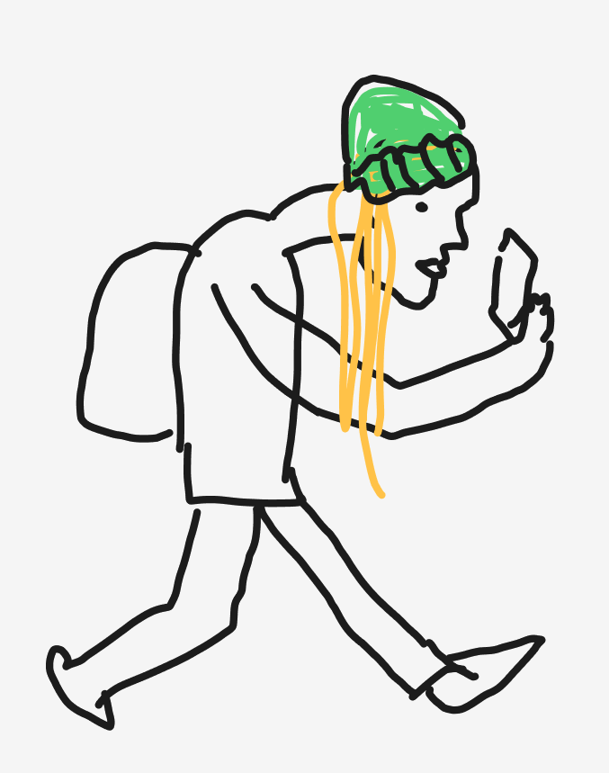
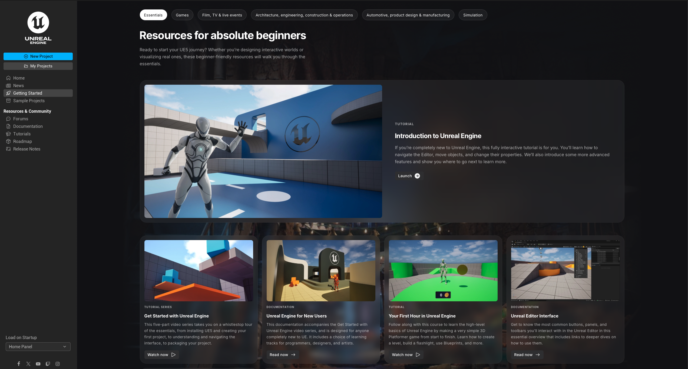
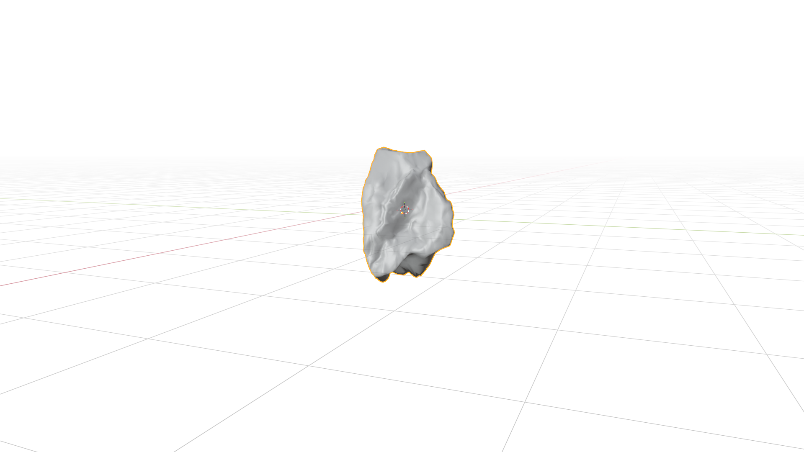
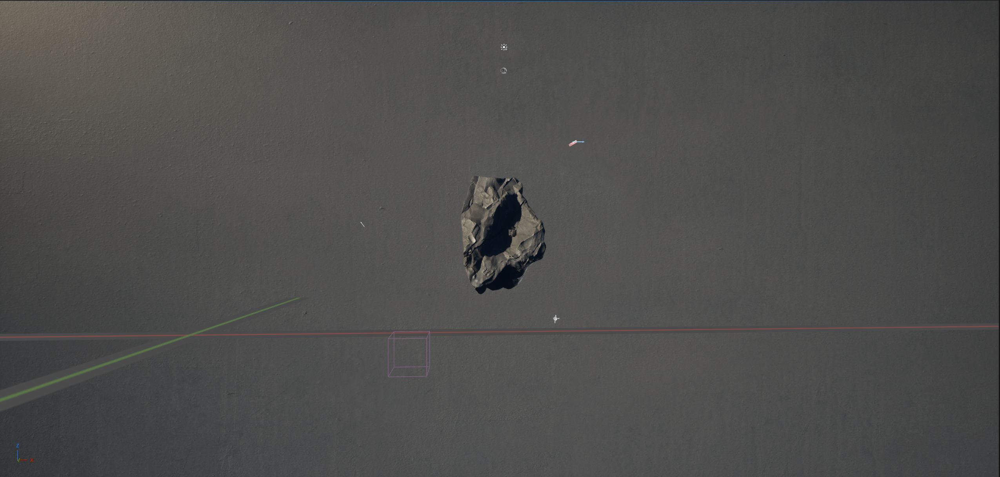
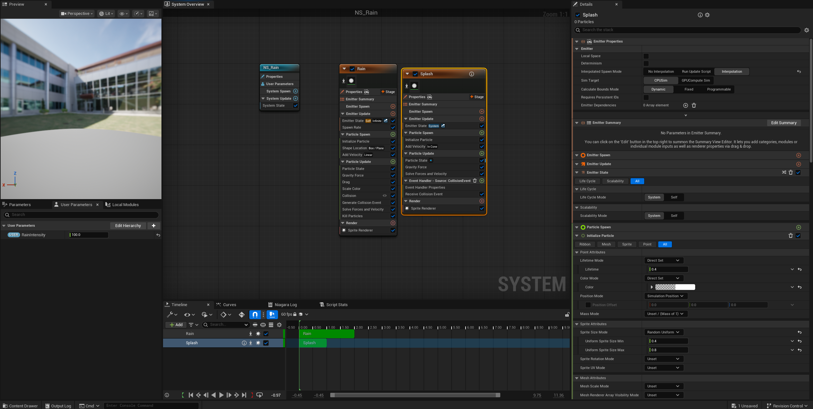
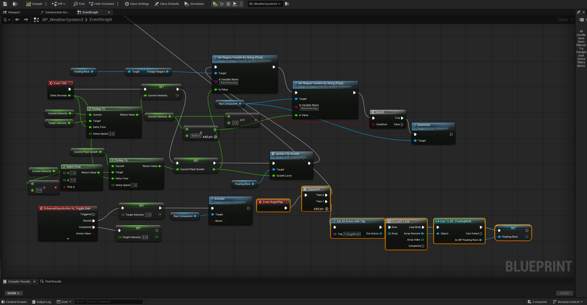
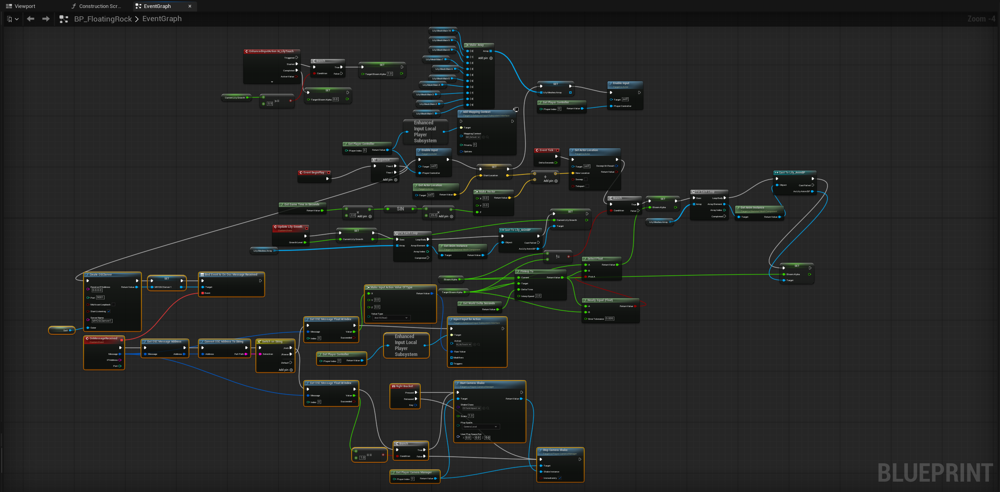
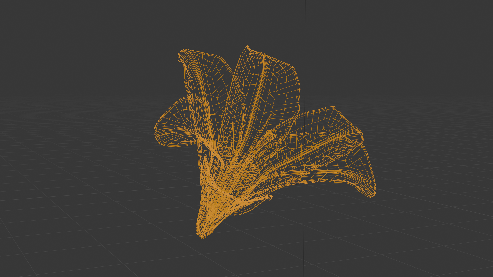
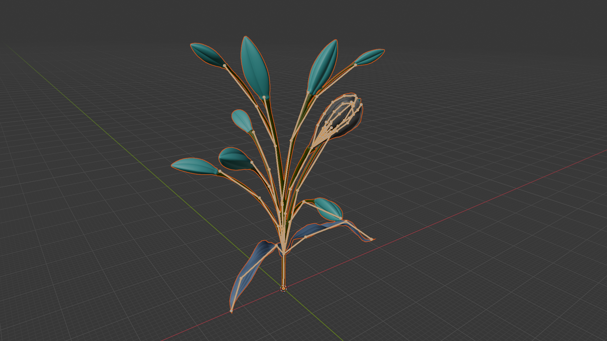
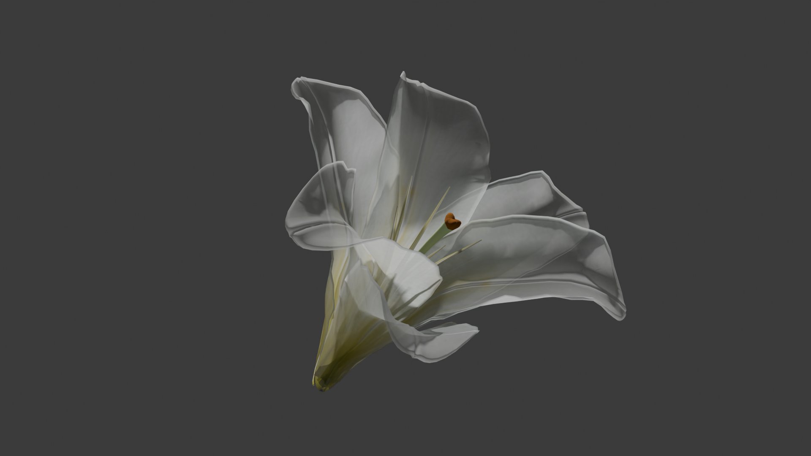

LUMIERE
A multi-sensory, audio reactive experience that blends sound, tactility and live reactive visuals
[EXHIBITION WIP]


1/2

[The Urbaniac]
Sensory bottleneck
Adverse to ecoshame
Curious
As part of a theoretical group project, we were tasked to use play as a design tool to encourage meaningful engagement with nature.
As a group, we sought to tackle a very specific target audience- The Urbaniac. These Urbaniacs were a difficult group to tackle as the two opposing hypotheses: Biophilia and Biophobia were both relevant to them. They loved selective aspects of nature such as the sound of rain (when indoors) but hated things like discomfort, dirt and other unfamiliar critters.
Throughout our research, we found that these Urbaniacs enjoyed parts of nature that were within their control- enjoying nature as scenery or as an ambient soundscape. This target audience was sophisticated- they preferred curated, polished and high tech environments that offered a novel, controlled experience.
Therefore, we explored how playful, multisensory experiences could transform passive observers into active participants, using curiosity, wonder and collaborative engagement to reveal the impact each individual can have in a shared environment.
[INITIAL EXPERIMENTS]

1/2
[USER TESTING]

1/2
User testing revealed some critical gaps and areas that needed some adjustments and others that needed a complete overhaul for a truly fun, immersive and multi-sensory experience
The experience itself was described to be immersive, fun and delightful. However, some testers mentioned that apart from the layered soundscape, there wasn't really other elements that really tied the different objects together into one, living system. Moreover, there wasn't enough of an immediate gratification when objects were touched as the reactive sound was designed to seamlessly add to the soundscape. As a result, some users reported that they weren't quite sure what they were contributing to the experience at times.
With the feedback from the first prototype, we sought to create an unified, living system that reacted and grew into something beautiful only when the users worked with one other.

For beautiful, livetime visuals with logic and Touchdesigner integration, Unreal Engine was a no brainer for our living system.
Although Unreal was completely unchartered territory for me, its powerful realtime graphics, game logic, compatibility with Blender and TouchDesigner undeniably made it the best tool for the job.


[BLENDER + UNREAL]
A rock I modeled in Blender for a moving poster earlier on in the project was imported into unreal via fbx, retextured using Unreal friendly texture maps and set up with an 'infinite' studio backdrop that was given a textured concrete material. World lights, fill lights and rim lights were set up to give the rock some stark, dramatic lighting to create visual interest.


[NIAGARA + BLUEPRINT]
Rain was created through Unreal's unique niagara particle system. The rain intensity (spawn rate) was promoted to a variable parameter that was called through the blueprint system. The intensity would increase the longer it rained and the blueprint was set up in a way that would trigger the foliage and lily growth

[ROCK BLUEPRINT]
The rock and the foliage was given its own blueprint. In short, the foliage assets were set to all run on the event tickrate (for OSC) and to listen for the variable: isitRaining? In a nutshell, if OSC is equal to 1 (water is being touched), it would rain and if rain=true, trigger foliage and lily_growth animation and reverse if water is not being touched (OSC<1)



[BLENDREAL]
Lilies were modeled through Blender and then hand rigged- keeping it basic to allow for lag free realtime playback. Using the Non Linear Animation in Blender, I was able to animate two states: growth and bloom.